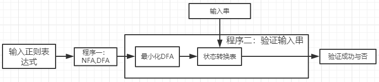

Rendering ...

输入一个正规式 (RegExp)
示例 "01*|00(10)*|01", "abc*|ac*b"
1.将RegExp转换为NFA
2.将 NFA 转换为DFA
3.将 DFA 转换为最小化DFA
NFA(Nondeterministic Finite Automata)
DFA(Deterministic Finite Automata)
minDFA(Minimal Deterministic Finite Automata)
状态转化表